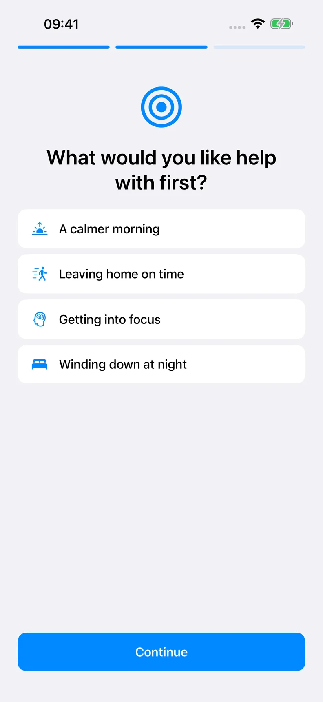
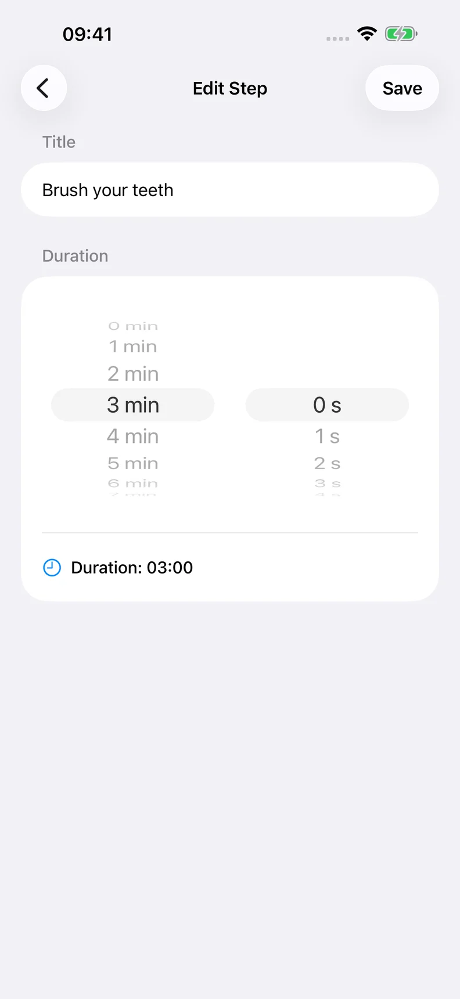

Choose a starting point
Pick a template or build a routine of your own.
A LITTLE STRUCTURE FOR EVERYDAY LIFE
A calmer way to follow your day. Turn your morning, focus time or evening into a routine you can take one step at a time.
Start with 3 free routines. Optional Pro subscription.

Your routine. Your pace.
How it works
Give the next step a place to live.
Pick a template or build a routine of your own.
Change the steps, put them in order and set a time for each.
Start the timer. Pause when you need to. Move on when you are ready.
ROTINELY
Choose what you want to make easier. Keep the steps that help and change the rest. Your routine can be as simple as getting out the door.
Screens show illustrative sample routines.


Free & Pro
Monthly and annual plans are shown in the app in your local currency. Any trial and its renewal price are shown before purchase. Pro renews automatically unless cancelled through Apple.
Practical guides
Simple examples you can adapt to the day you have.
Practical guides
Try a five-step morning routine with suggested timings. Adjust the steps to your day and follow them with a routine timer on iPhone or iPad.
Read the guidePractical guides
Break a routine into clear steps, choose a duration for each, and learn when to pause or move on. A practical guide with examples from Rotinely.
Read the guideFAQ
You choose when to go to the next step. Reaching zero does not automatically advance the routine.
Notifications need permission. Focus, Silent mode, device settings and iOS behavior can affect delivery and sound. Spoken guidance works while the app is open; it is not a guaranteed background alarm.
iCloud sync is not active in the reviewed relaunch build. Do not rely on it for backup or syncing between devices.
No. Rotinely is a personal organization tool. It does not diagnose, prevent or treat ADHD or any other condition, and does not replace professional care.
Manage your subscription in Apple Account settings. Deleting the app does not cancel a subscription.
Try one routine that fits the day you actually have.
View on the App StoreAvailability and offers depend on your App Store region.